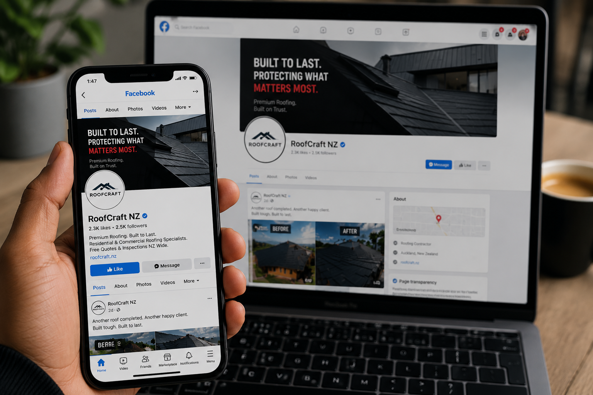

Case study — Social media strategy
Roofcraft Social Media
Building a trusted roofing brand through strategic content, engaging storytelling and consistent social media management across TikTok, Facebook and Instagram.


01 Overview
One brand, managed consistently across every platform.
This project covered Roofcraft’s day-to-day digital presence — not just designing posts, but running the whole system behind them: monthly content planning, a weekly publishing schedule, on-brand photography and video, editing, copywriting and ongoing audience engagement. The goal was a presence that felt like one voice everywhere it showed up, and that turned attention into real enquiries.
02 Platforms managed
Each platform earned a different job.
TikTok
Reach & personality
- Short-form installation videos
- Behind-the-scenes on site
- Team culture clips
- Quick educational tips
Local trust
- Community updates
- Completed project showcases
- Seasonal promotions
- Customer reviews
Visual proof
- Professional photography
- Reels & stories
- Before & after transformations
- Highlight-worthy finishes
03 Content strategy
Four jobs every post had to do.
Building trust through consistent educational and project-based content.
Encouraging conversations, shares and genuine customer interaction.
Turning social visitors into real roofing enquiries.
A consistent colour palette, typography and tone of voice throughout.
04 Content gallery
A sample of what went out each week.
{kind=link}
{kind=link}
{kind=link}
{kind=link}
{kind=link}
{kind=link}
{kind=link}
07 Workflow
The same eight steps, every single week.
08 Branding
An identity that held up everywhere it appeared.
Roofcraft’s online identity was built to feel like one company, whether someone found it through a TikTok clip or a Facebook review. That meant the same colour palette and tone of voice on every post, professional imagery over stock photos, genuinely educational content, and a local, community-first focus that matched how the business actually works.